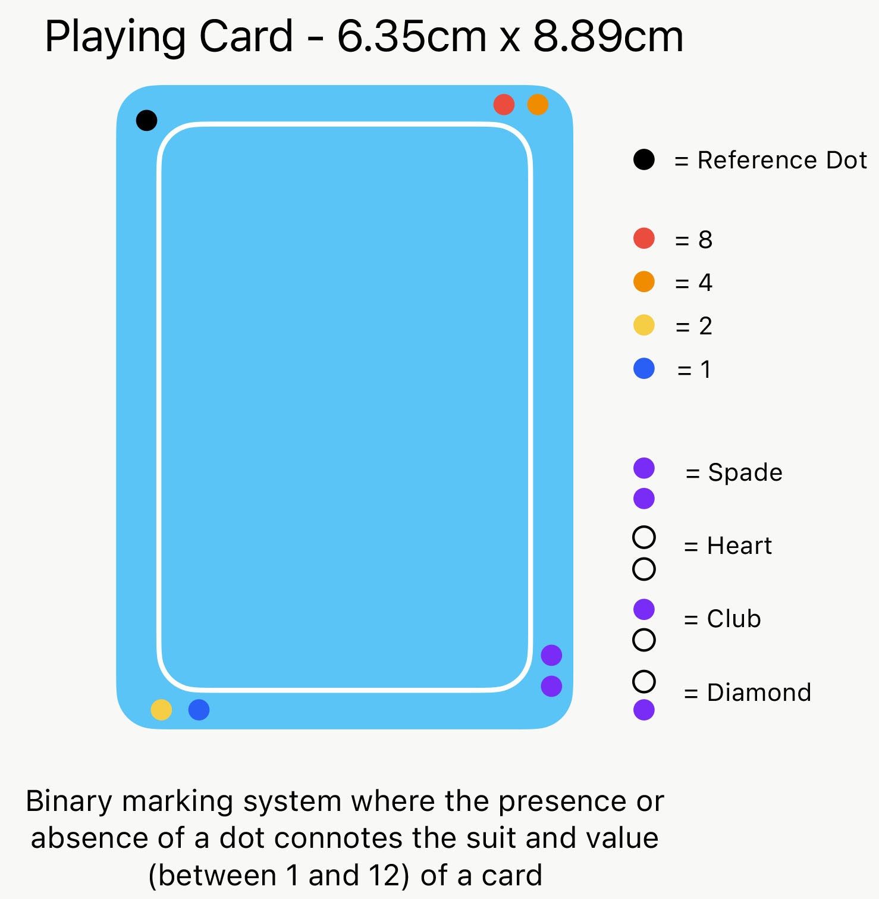
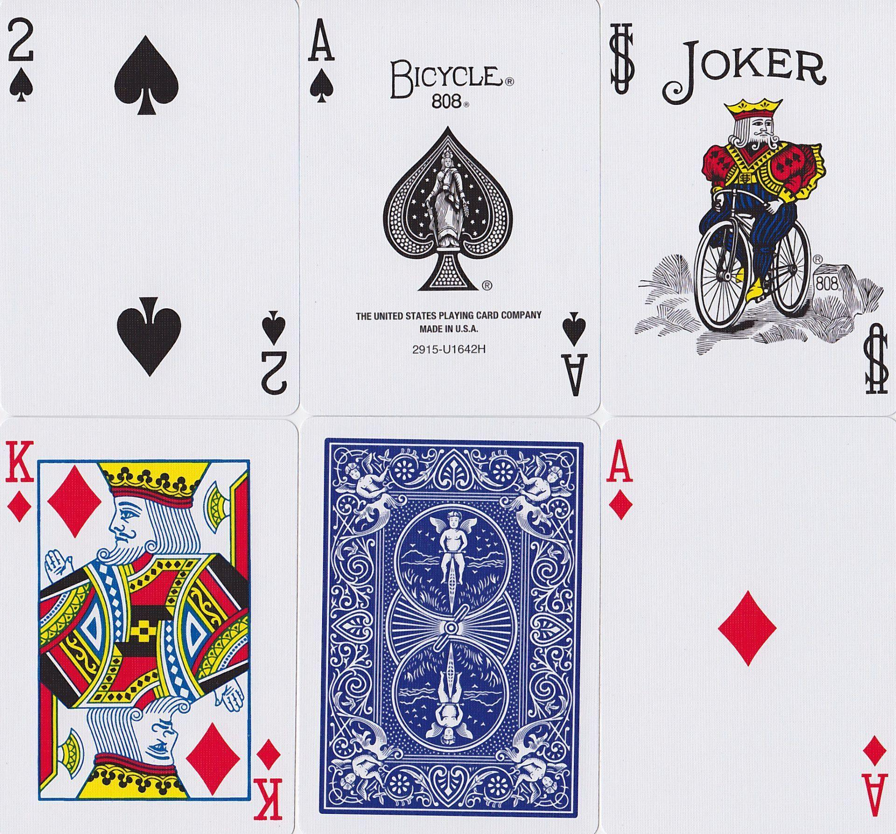
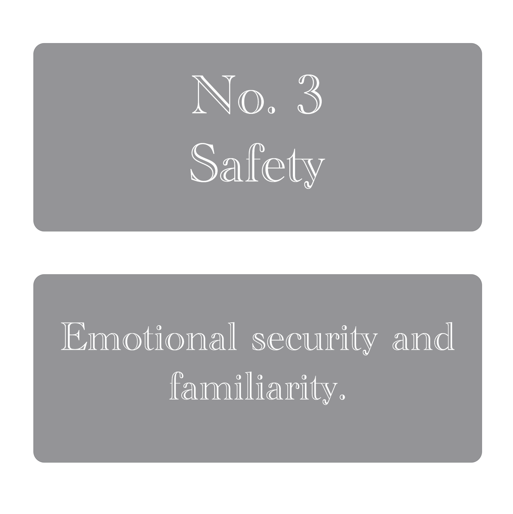

Planning
When AR development was first introduced to us during the workshops provided in person and on the VLE, one of my earliest instincts was to use playing cards in an image tracking project. This was on account of two motivating factors; having a high quality range of markers that would provide the option to expand the project if I have time, and not wanting to dedicate time to creating my own in favour of putting that time towards development and research.
Despite this early conclusion, it took me a while to arrive at a final decision on what my project would be beyond the marker.
- Having a high quality range of markers
- Not dedicating time to creating my own markers
I considered a few ideas, the first was to add some markings to the back of the playing cards that the AR camera would read and be able to determine and reveal the card without seeing the front. I designed a system for marking the cards and was feeling enthusiastic about this idea but started to have concerns that this would not meet the project brief as I had not considered where a 3D object could be implemented. In addition to this, the idea posed multiple technical challenges, for instance how to make the markers readable to the AR camera and yet not imposing on the user.
Ultimately, I decided to explore other options.

Freeform diagram of card markings

Standard Bycicle Playing Cards.
Too Simplistic – lots of white space – too symmetrical
I then tried using the front of the playing cards, initially with the mindset of experimenting to arrive organically at a final concept. Continuing with the theme of playing cards I was considering referencing traditional card games in some novel way. This ultimately proved fruitless however, as I realised then that the face of a standard playing card was not complex enough to work for image tracking AR and when trying to build with Unity, it would flag the image as an invalid marker and fail to build and run.

Bicycle ‘Gypsy Witch’ playing cards
It was at this stage that I pivoted. Fortunately, I owned a set of Bicycle ‘Gypsy Witch’ playing cards, a deck inspired by the historical cartomancer, Anne Marie Le Normand who pioneered a card reading methodology to read people's fortunes. These cards, by design, are more detailed as they integrate Lenormand’s symbols and interpretations with the standard deck. This made them suitable for AR image tracking.
Given that I was now working with this deck of cards, I decided to create an AR project which reflected this style of card reading by first researching single-card readings and common interpretations of the cards. At this stage I should clarify that given the time I was able to dedicate to this project, the work I have created is not intended as a comprehensive representation of this practice, but as a fun, mystical experiment that aligns with intent behind these novelty cards from Bysicle.
My research into single card readings using lenormand’s method led me to a few key points of interest. Firstly, unlike tarot which can be more symbolic and introspective, Lenormand cards are generally considered more direct. The practitioner would shuffle the deck, draw a card with a specific question in mind and interpret its meaning in context with the question. By modern, pop culture standards, the technique could be likened to a magic eight ball. This research validated that clear and simple interpretive material is central to this style of card reading, steering my design towards more minimal text overlays.

Card meaning overlay design
I also found that the symbolic imagery associated with each card was fundamental to the practice. In some iterations, a person might take a symbol first approach to interpreting the card's meaning; where they consider personal affiliations with the imagery in context with the question asked.
I wanted to reference this within the AR interaction where the symbol on the card is more prominent; appearing first and followed by the text overlay, mirroring the real world interaction.
In the next page I document the process of creating this image tracking AR experience using Unity and C#.